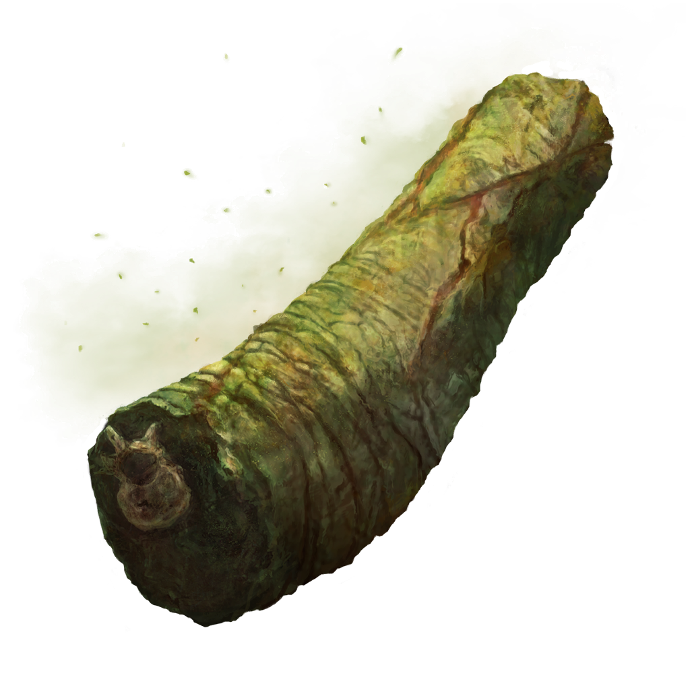

Odin Recipes
Recipes built for a Tarnish. Built for a God slayer.
You do not.
Unafraid, you open the third tome only to be met with a recipe for what seems to be some green meat?

Underneath an image of what you can only imagine is some sort of meat, you find a recipe.
Pickled Turtle Neck
Said to taste terrible, but has many health benefits.
Ingredients
- 4 lbs of turtle neck
- 1/2 cup brown sugar
- 1/2 cup kosher salt
- 1 teaspoon cayenne pepper
- 3 cups apple cider vinegar
- 5 cups water
- 1 large onion sliced
- 1 head garlic separated, peeled and crushed
- 3 tablespoons mustard seed
- 2 bay leaves
Instructions
-
In a jar (or similar sealable container, perhaps a cracked pot), combine your water and rose petals. Allow the water to infuse anywhere from 1 hour to overnight.
-
In a large bowl, mix together the rub: brown sugar, kosher salt, and cayenne pepper.
Have 2 large ziplock bags ready (and make sure there are no holes in the bags since we'll be adding the brine to it).
In small handfuls, dip the turtle into the rub and make sure that they are lightly coated, then shake off any excess.
Repeat this until all of the turtle chunks have been coated. Then, set aside and let stand for about two hours for the turtle to get to room temperature and the salt rub to kick in.
-
In a large saucepot, combine the apple cider vinegar, water, sliced onions, garlic, mustard seed, and bay leaves, and over MEDIUM-HIGH heat, bring to a boil; simmer for 5 minutes, then turn off the burner, set the pan aside, and let it cool down.
-
Once the turtle has sat for two hours and the brine is now cool to the touch, carefully pour the liquid into the two ziplock bags. Once all the liquid is in the ziplock bags, squeeze out as much air as you possibly can and tightly seal the bags.
To avoid any messy spills or mishaps, place the bags in a large bowl and refrigerate. The pork will sit here for 7 days, but you need to flip the bags once a day.
-
After 7 days, remove the turtle from the brine. I separated the turtle into four 1-pound bags. It will last two weeks in the fridge, so, keep out what you plan on using right away and freeze the rest until their time has come.

Click a rose to go back.